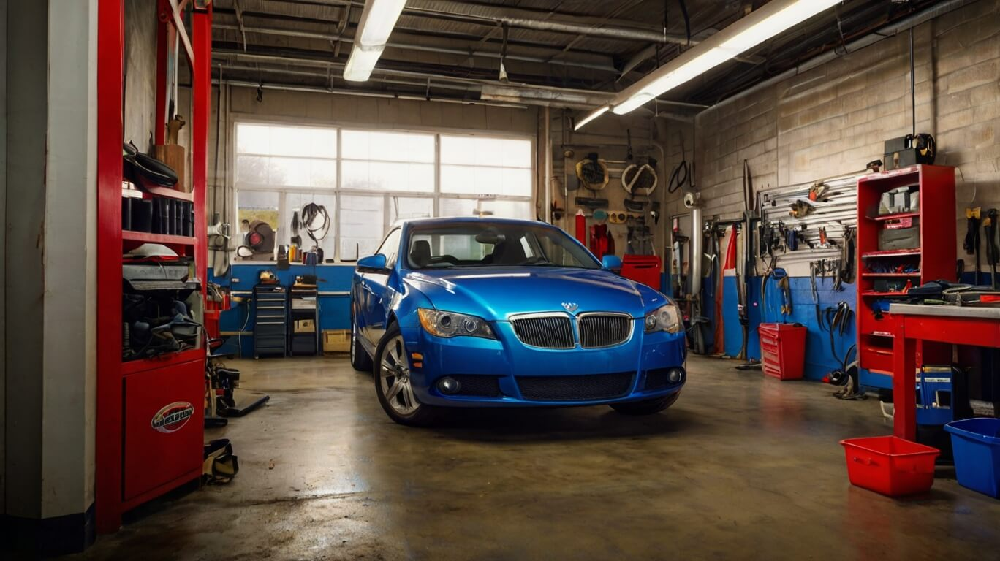
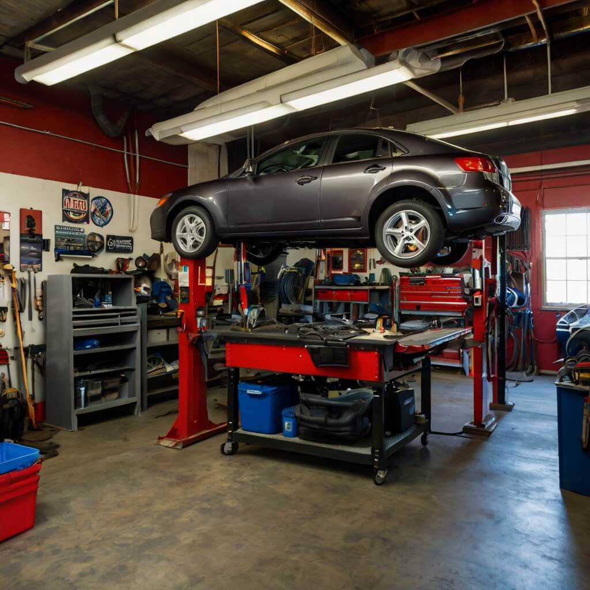
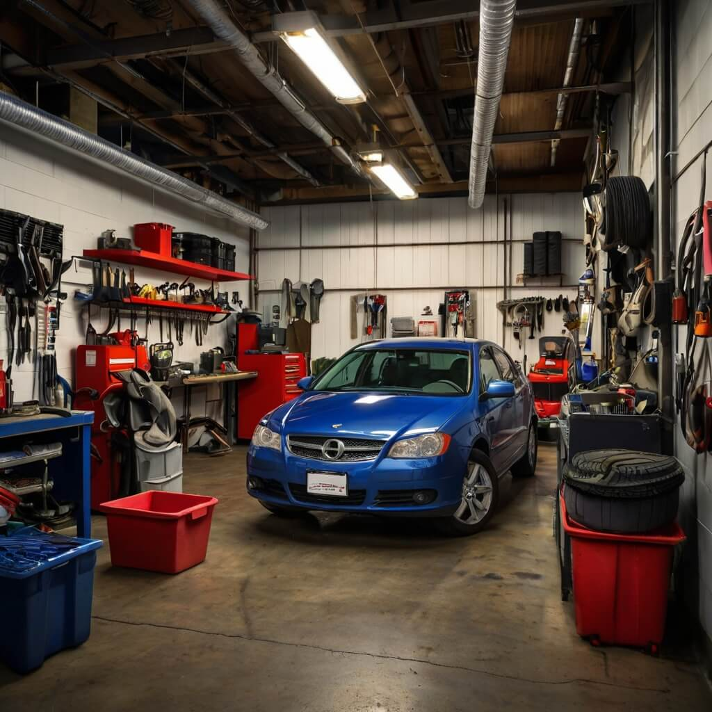

Expert Auto Care with PitStopPro
Reliable Service, Proven Results
At PitStopPro, we understand that your vehicle is more than just transportation—it’s an essential part of your daily life. Our expert technicians are dedicated to providing professional, high-quality service to keep your car running smoothly. Whether you need routine maintenance, advanced diagnostics, or major repairs, we are committed to delivering the best results with precision and care.


Keeping Vehicles in Top Condition Since 2009
Our goal is to provide top-quality automotive care with integrity, expertise, and reliability. At PitStopPro, we believe in transparency and customer satisfaction, ensuring that every repair and maintenance service we perform meets the highest industry standards. Your vehicle deserves the best, and our team is here to deliver just that.
Every driver deserves a safe and reliable vehicle. That’s why we take the time to understand your car’s needs, providing tailored solutions that enhance performance and longevity. From minor adjustments to complex repairs, we approach every job with the same level of dedication and precision.
Our Commitment to Quality
Since 2009, PitStopPro has been a trusted name in auto repair, delivering expert service to thousands of drivers. Our reputation is built on hard work, technical excellence, and a commitment to customer satisfaction. We take pride in keeping vehicles running efficiently and safely, ensuring that every customer drives away with confidence.
Driven by Passion
Every repair is performed with precision and a deep commitment to excellence.
Focused on Performance
We fine-tune every detail to keep your vehicle in peak condition.

Stay Connected with PitStopPro
Subscribe for service updates, special offers, and expert automotive advice to keep your vehicle running at its best.
Our Services
At PitStopPro, we provide comprehensive auto care, from routine maintenance to specialized repairs. Our skilled team handles everything from oil changes and brake replacements to complete engine diagnostics. With state-of-the-art equipment and years of experience, we ensure that every service meets the highest standards of quality and reliability.
PitStopPro Tune-Up Services
Regular tune-ups keep your vehicle running efficiently and help prevent costly repairs down the road. Our team carefully inspects and adjusts your car’s essential components, ensuring optimal performance and reliability.
PitStopPro Custom Repairs
Every vehicle is different, which is why we offer customized repair solutions tailored to your car’s specific needs. Whether it’s fixing an engine issue, upgrading suspension systems, or addressing electrical problems, we provide expert solutions to keep your vehicle in top shape.
PitStopPro Maintenance Plans
A well-maintained vehicle lasts longer and performs better. Our maintenance plans are designed to help you stay on top of routine care, including tire rotations, fluid checks, and system inspections. Trust us to keep your vehicle safe and efficient year-round.
PitStopPro Restoration Services
Restoring a vehicle requires precision and expertise. Whether you’re reviving a classic car or repairing an older model, our restoration services bring vehicles back to life with careful attention to detail and quality craftsmanship.
PitStopPro Premium Repairs
We offer specialized services that go beyond standard repairs, providing performance enhancements, custom modifications, and high-end upgrades to elevate your driving experience.
PitStopPro Expert Tune-Ups
Our expert technicians ensure that every component of your vehicle is running smoothly, maximizing efficiency and extending the lifespan of your car.
PitStopPro Auto Care Resources
Access professional tips and insights on maintaining your vehicle, troubleshooting common issues, and understanding key aspects of car care.